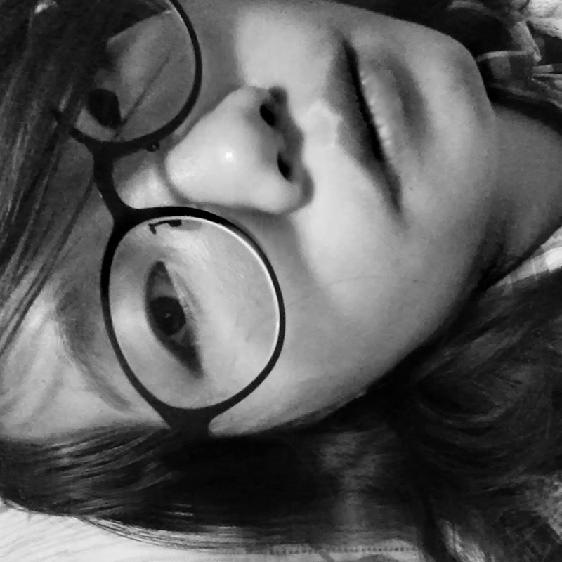

工作與學經歷
雙肩智慧股份有限公司 - UI UX設計師 2021~ 現在
金上吉塑膠股份有限公司 - 產品機構設計師 2020~2021
嘉泰鋼模股份有限公司 - 模具機構工程師 2017~2019
起勁設計 - 電子產品設計師 2015~2017
國立成功大學 - 工業設計所 2013~2015
國立高雄師範大學 - 工業設計系 2010~2013

雙肩智慧股份有限公司 - UI UX設計師 2021~ 現在
金上吉塑膠股份有限公司 - 產品機構設計師 2020~2021
嘉泰鋼模股份有限公司 - 模具機構工程師 2017~2019
起勁設計 - 電子產品設計師 2015~2017
國立成功大學 - 工業設計所 2013~2015
國立高雄師範大學 - 工業設計系 2010~2013
我擁有電子產品設計、模具機構設計與嬰兒用品設計的經驗，累積了多年的實戰能力，我參與從概念發想到量產整體設計的流程，涵蓋外觀設計提案、材料使用分析、機構安規實驗、與量產製程等開發環節。
我擅長結合使用者需求與市場趨勢，確保產品的外觀美學與功能性兼具，此外，我熟悉各類塑膠材料的特性，能夠針對不同產品需求選擇最適合的材料，並考量耐用性、確保符合各種實驗安規的強度、成本與環保因素。 在模具與機構設計方面，我具備精確的結構分析能力，模流分析、現場試模與產線組裝等實戰經驗，親自參與各製程階段並檢討修正，確保開發過程符合設計要求，降低生產誤差與成本。 目前半路出家從事使用者流程研究和介面設計。
以下"我的專案"分別為電子產品、模具設計、嬰兒用品等挑出三項專案設計經驗與過程分享，請點閱~
從電子產品設計工作室和嬰兒用品公司的經驗，培養我成為一位能夠獨立全程控管開發到量產時程的專案設計師!
開發時程緊湊且突發狀況相當多，前期我帶領設計助理進行市場分析，將現有的競爭產品購回並拆機研究，反覆實驗，並進行草圖提案和3D建模。
開發中期進行機構設計與模型安規實驗，此階段相當考驗開發者的經驗與耐心，因為實驗失敗率相當高，需要反覆3D修正、列印、實驗並確認開模合理性。
修正後進入開模階段，此階段與模具工程師討論結構並協助撰寫DFM，控管合理的開模方式、成本與時間，並推估開模時程安排試模。
當進入反覆的試模與修模階段時，也將試模品送內測與國家實驗室進行實驗，並反饋給設計夥伴們，最後安排產品量產、產線時程控制與包裝實驗。
而在產線過程中，需要密切的與各部門與供應商溝通，例如各製程排程與良率控制、公差分析、印刷色彩校色、包裝順序與效率等，對內對外的溝通與協作訓練我的整合能力，整個流程相當繁瑣且與各部門協調相當密切，需要有好的耐心和溝通能力，很幸運的我擁有好的夥伴互相合作，雖然過程有波瀾但仍舊順利完成專案與任務。
嘉泰鋼模的主要開發塑膠模具，業務範圍針對日本專櫃化妝品多項品牌，其次為Homda車用外觀零件。
我在這間公司初期負責標圖、加工出圖和修改圖面、聯絡加工廠商等基礎工作。 中期能獨當一面後，開始參與模具機構設計。最主要針對化妝品模具，並協助資深工程師開發車用模具等專案，面對不同機構產品，除了跟客戶討論合理的開模方 法、與現場師傅請教加工技法，也需要安排後續試模時程和試模地點。 後期負責處理模流分析與品管，案子開發初期需要跟客戶討論進澆方法、進澆點、進澆數量與順序，利用Moldex3D分析，然後與射出師傅討論射出條件並驗證模流的合理性，並撰寫報告。
在這間公司我奠定扎實的機構設計概念與實務、製圖能力、危機應變能力，為我後續工作打造穩地的地基。
2024年11月有幸被公司派往日本北九州，與當地日本企業交流與尋找合作資源，為未來公司投資日本等規劃，先了解當地的公司文化與政府補助。
於2022年11月初的農業展，主要針對畜牧業、養殖漁業IoT與設備的大型展覽，我主要任務是我司的智慧養殖系統與合作廠商畜牧設備導覽。
是射出機、3D列印機、機械手臂齊聚一堂的年度盛會，各國企業抓住機會來臺灣尋找優良品質設備廠、生產線、加工廠，我負責導覽我司主要技術領域產品與交流。
工作之餘也多元的涉略其他領域的知識並增廣見聞，因為一個設計的內涵來自於生活細節。 例如下班時到拼布班做包包與家飾、又或者假日參加金工班陶冶手工技藝。
同時我學習紫微斗數，這是個具有上千年歷史的統計方法，它讓我體驗更加多元的人生經歷與生活哲思，也因為它讓我和更多不同領域的人們接觸，聆聽他們的煩惱與故事，這些細節讓我勾勒出社會各產業的趨勢、各階層生態。 他們分享的經驗成為我的養分，幫助我在面臨不同事件中能夠用更設身處地處理，使我的設計更加圓融!